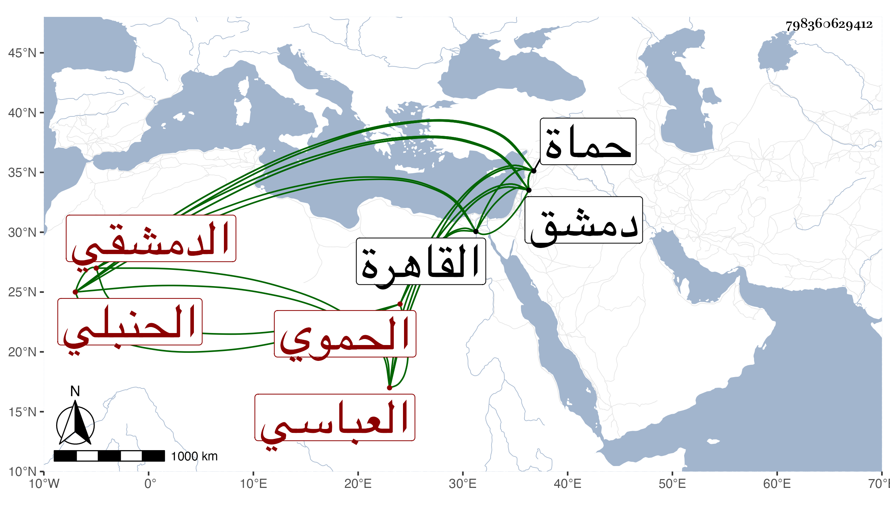

0902Sakhawi.DawLamic.ITO20230111-ara1.EIS1600.798360629412
Biography ID: 798360629412
149
عبد الرحمن بن أحمد بن حسن بن داود بن سالم بن معالي موفق الدين أبو ذر بن الشهاب العباسي الحموي ثم الدمشقي الحنبلي ويعرف بموفق الدين العباسي . ولد سنة احدى وثلاثين وثمانمائة بحماة ونشأ بها فحفظ القرآن والمحرر والطوفي في أصولهم وألفيتي الحديث والنحو والشذور ، وعرض على جماعة واشتغل في العربية والفقه على الشمس محمد بن خليل الحموي الحنبلي ، وكذا في الفقه على غيره ، وناب عن أبيه في قضاء حماة ثم استقل به في حياته حين كف وذلك بعد الستين ولكنه لم يباشره ثم تركه لولده الأكبر أبي الفضل محمد واستقر هو في نظر الجيش بدمشق سنة تسع وسبعين ثم انفصل عنه الشهاب بن النابلسي في صفر سنة ثمانين ثم أعيد إليه في سنة اثنتين وثمانين ثم انفصل بالشهاب بن الفرفور في سنة ست ثم ولي كتابة سرها في سنة تسعين بعد النجم بن الخيضري ثم انفصل عنها في سنة اثنتين بأمين الدين الحسباني وأعيد لنظر الجيش بعد وفاة عبد القادر الغزاوي في مستهل ربيع الأول سنة ثلاث وتسعين ثم أضيفت كتابة السر لولده حين دخل صاحب الترجمة القاهرة ، ورجع لبلده فتوعك في توجهه ولم يلبث أن مات بدمشق في عاشر رمضان من سنة ثلاث .
